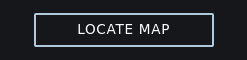
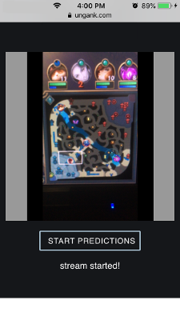

Instructions
1. Ungank uses your mobile device's camera. On Apple devices only the Safari web browser supports this functionality. On Android devices we recommend the Chrome web browser.
2. Press the LOCATE MAP button, the browser will request permission to use your device camera.
3. Place the phone in front of your monitor, with the League of Legends map occupying most of the video display. We recommend using an adjustable phone stand.
4. Press the START PREDICTIONS button to begin predictions.